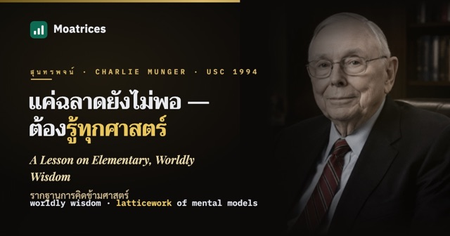
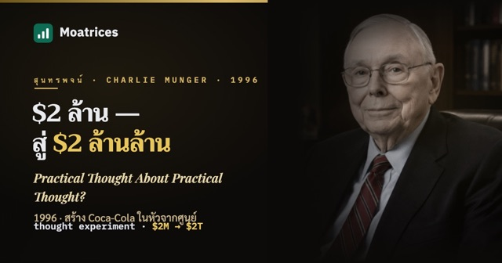
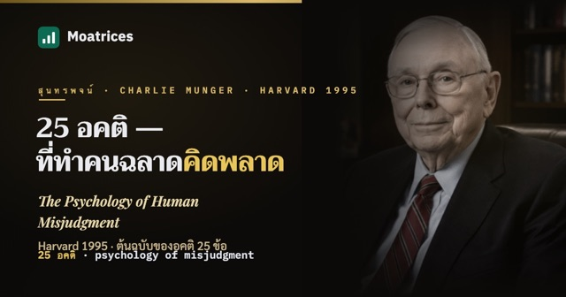
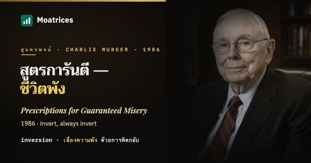
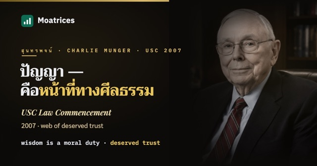

Munger Talks
สุนทรพจน์และเลกเชอร์ 5 บทของ Charlie Munger ย่อยเป็นภาษาไทย — Worldly Wisdom, โจทย์เปลี่ยน $2 ล้านเป็น Coca-Cola $2 ล้านล้าน, อคติ 25 ข้อ, สูตรการันตีชีวิตพัง และปัญญาคือหน้าที่ อ่านเรียงตามลำดับได้เลย
-
A Lesson on Elementary, Worldly Wisdom (USC 1994) — เลกเชอร์ mental models ที่กลายเป็นตำรานอกหลักสูตร
เลกเชอร์ 90 นาทีที่ถูกส่งต่อกันมากที่สุดในประวัติศาสตร์การลงทุน — Munger สอนนักศึกษา USC ว่าความรู้ที่ใช้ได้จริงคือโครงตาข่ายของ models ข้ามศาสตร์ และตลาดหุ้นแท้จริงแล้วคือสนามม้า pari-mutuel

อ่านต่อ → -
Practical Thought About Practical Thought? (1996) — โจทย์เปลี่ยนเงิน $2 ล้านเป็น Coca-Cola $2 ล้านล้าน
Munger สมมติตัวเองอยู่ปี 1884 รับโจทย์เปลี่ยนเงิน $2 ล้านของ Glotz ให้เป็นธุรกิจเครื่องดื่มมูลค่า $2 ล้านล้านภายใน 150 ปี — แล้วแก้โจทย์ต่อหน้าผู้ฟังด้วย mental models ล้วนๆ ไม่มีสูตรการเงินสักบรรทัด

อ่านต่อ → -
The Psychology of Human Misjudgment (Harvard 1995) — เลกเชอร์สดต้นฉบับของอคติ 25 ข้อ
ก่อนจะกลายเป็นบทที่ยาวที่สุดใน Poor Charlie's Almanack มันคือเลกเชอร์สดที่ Munger พูดจากโน้ตแผ่นเดียวที่ Harvard — ฉบับที่มีเรื่องเล่าและเสียงหัวเราะที่ฉบับหนังสือตัดทิ้ง

อ่านต่อ → -
Prescriptions for Guaranteed Misery (1986) — สุนทรพจน์รับปริญญาที่สอนสูตรการันตีชีวิตพัง
แทนที่จะสอนบัณฑิตว่าทำอย่างไรให้ชีวิตดี Munger เลือกสอนสูตรทำชีวิตให้พังแบบการันตีผล — inversion ฉบับสมบูรณ์แบบที่สุดเท่าที่เคยมีในสุนทรพจน์รับปริญญา

อ่านต่อ → -
USC Law Commencement (2007) — ปัญญาคือหน้าที่ และเว็บไร้รอยต่อของความไว้ใจที่สมควรได้
สุนทรพจน์รับปริญญาที่กลั่นทั้งชีวิต Munger ใน 30 นาที — วิธีที่ปลอดภัยที่สุดในการได้สิ่งที่ต้องการคือทำตัวให้สมควรได้มัน และทำไมปัญญาถึงไม่ใช่ทางเลือก แต่เป็นหน้าที่ทางศีลธรรม

อ่านต่อ →